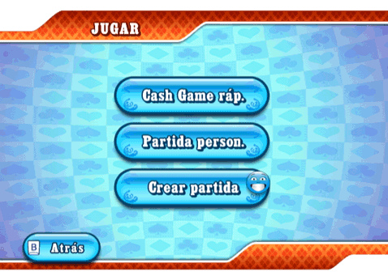
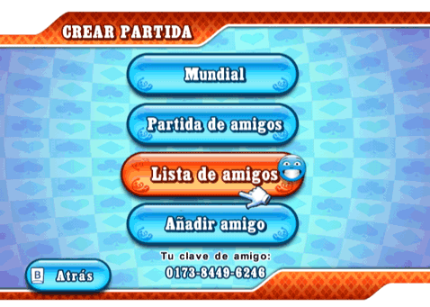

20 |
Jugar |
 |
 Elige si quieres jugar un Cash Game rápido, si quieres unirte a gente de todo el mundo a través de la Partida personalizada o si quieres crear tu propia partida con la opción Crear partida. Cash Game rápido Te unirás automáticamente a una mesa de Cash Game que tenga unas ciegas (blinds) que puedas permitirte en función de tus fondos. Cuando te unas a un Cash Game ya comenzado, la cantidad de dinero más alta que puedas permitirte se establecerá como tu compra para la partida. Partida personalizada Ve al menú Detalles de juego. Desde allí puedes especificar tus criterios de búsqueda y te unirás automáticamente a rivales de todo el mundo. Solo Cash Game: Dependiendo de los Cash Game disponibles, es posible que entres en una partida que ya haya empezado, o que seas dirigido a una sala antes de que la partida empiece. Crear partida  Desde este menú puedes crear una partida mundial, una partida privada de amigos, acceder a tu lista de amigos o añadir/borrar amigos. Solo el anfitrión puede reservar plazas y comenzar la partida. Crear una partida mundial En una partida mundial, puedes unirte a cualquier persona del mundo. Todos los jugadores pueden invitar a sus amigos. Crear una partida de amigos Está bien si no quieres jugar contra desconocidos. En este menú puedes elegir si quieres crear una partida privada a la que solo puedan unirse tus amigos. |
 |
 |
 |